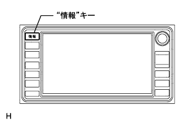
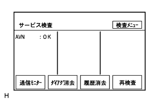
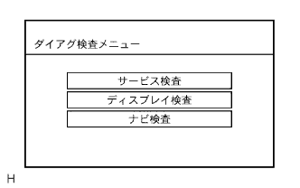
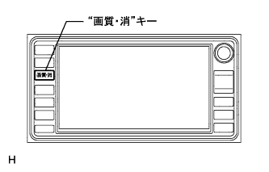
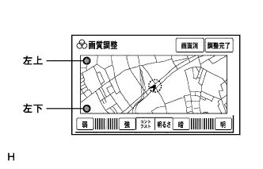
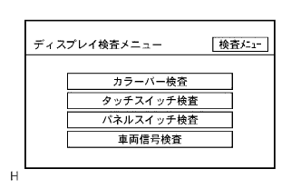
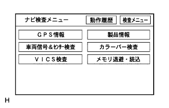
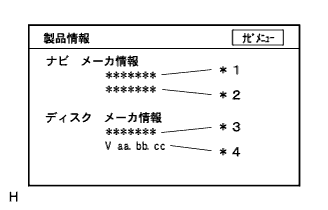

サービス検査
- □ 参 考 □
- 点検要領は
 参照。
参照。 - サービス検査は、“システム検査指示”、“ダイアグメモリ提示要求”に対する各機器の応答および“通常ダイアグ通知”等の情報をもとに、検査した結果を画面に表示する。
- “サービスモニター検査”画面は、AVC-LANによる各機器の通信ダイアグの入力表示を行う。
- サービス検査の各画面はナビゲーションレシーバASSYが描画する。
DVDナビゲーションシステム ダイアグノーシスシステム |
起動方法1
車両停止状態にする。
IGスイッチACC、ONまたはエンジンを始動する。
|  |
ナビゲーションレシーバASSYの“情報”キーを押しながら、ヘッドランプディマスイッチをOFF→TAIL→OFF→TAIL→OFF→TAIL→OFFと操作する。
|  |
ダイアグノーシスが起動すると“サービス検査”画面が表示され、サービス検査が実施される。
|  |
“検査メニュー”を選択し、ダイアグ検査メニュー画面を表示させる。
| 表示 | 内容 |
|---|---|
| サービス検査 | システム検査+ダイアグメモリ収集を行い、双方の結果から、各接続機器の現在·過去の検査結果を表示する |
| ディスプレイ検査 | ディスプレイ部分の固有の検査を行う画面を表示する |
| ナビ検査 | ナビECU部分の固有の検査を行う画面を表示する |
起動方法2
車両停止状態にする。
IGスイッチACC、ONまたはエンジンを始動する。
|  |
ナビゲーションレシーバASSYの“画質·消”キーを押し画質調整画面を表示させる。
|  |
画質調整画面の左上と左下部分を、左上→左下→左上→左下→左上→左下のように、ゆっくりとタッチ操作する。
ダイアグノーシスが起動すると“サービス検査”画面が表示され、サービス検査が実施される。
“検査メニュー”を選択し、ダイアグ検査メニュー画面を表示させる。
| 表示 | 内容 |
|---|---|
| サービス検査 | システム検査+ダイアグメモリ収集を行い、双方の結果から、各接続機器の現在·過去の検査結果を表示する |
| ディスプレイ検査 | ディスプレイ部分の固有の検査を行う画面を表示する |
| ナビ検査 | ナビECU部分の固有の検査を行う画面を表示する |
解除方法
解除方法は、IGスイッチOFFにする。または“画質·消”キーを3秒以上押す。
サービス検査
参照。|  |
| 表示 | 内容 |
|---|---|
| カラーバー検査 | ディスプレイのカラー表示の検査 |
| タッチスイッチ検査 | ディスプレイのタッチスイッチ動作状態の検査 |
| パネルスイッチ検査 | ディスプレイ外周の各スイッチ動作状態の検査 |
| 車両信号検査 | ディスプレイに入力している車両側信号の状態の検査 |
参照。|  |
| 表示 | 内容 |
|---|---|
| GPS情報 | GPS関連情報を表示 |
| 車両信号&センサ検査 | ナビゲーションレシーバASSYに入力する車両信号情報を表示 |
| VICS検査 | VICSレシーバ検査·各ビーコン情報等の表示画面の呼び出し |
| 製品情報 | ナビゲーションレシーバASSYおよび地図ディスクのバージョンおよびメーカ名を表示する |
| カラーバー検査 | ナビゲーションレシーバASSYのカラー表示を確認 |
| メモリ退避·読込 | マモリーキャッチャーを使用して、ナビメモリ情報を退避·読み込みすることができる。 |
 |
GPS情報
ダイアグノーシスを起動させる。
“検査メニュー”を選択する。
“ナビ検査”を選択する。
“GPS情報”を選択する。
GPS関連情報を確認する。
| 表示 | 意味 |
|---|---|
| 衛星情報 | アンテナが捕捉する衛星の“衛星番号”“仰角”“方位”“信号レベル”“受信状態”を表示(最大12衛星分) |
| 日時 | GPSレシーバから得られる日時情報を“年”“月”“日”“時”“分”“秒”で表示 |
| 位置 | 現在地の緯度·経度情報を“度”“分”“秒”で表示 |
| 表示 | 条件 |
|---|---|
| 使用中 | 該当衛星を測位に使用している場合 |
| 受信中 | 該当衛星を捕捉しているが、測位には使用していない場合 |
| - | 該当衛星を捕捉できていない場合 |
| 表示 | 条件 |
|---|---|
| 2D | 2次元測位時 |
| 3D | 3次元測位時 |
| D-2D | ディファレンシャル有効2次元測位時 |
| D-3D | ディファレンシャル有効3次元測位時 |
| NG | 測位データ使用不可時 |
| error | 受信エラー発生時 |
| - | 上記以外 |
 |
車両信号&センサ検査
参照。 |
VICS検査
ダイアグノーシスを起動させる。
“検査メニュー”を選択する。
“ナビ検査”を選択する。
| 表示 | 内容 |
|---|---|
| 2メディアレシーバ検査 | VICSレシーバのダイアグ情報を表示(VICSレシーバ装着車) |
| 電波ビーコン情報 | ナビゲーションレシーバASSYが保持している電波ビーコン情報を表示(VICSレシーバ装着車) |
| 光ビーコン情報 | ナビゲーションレシーバASSYが保持している光ビーコン情報を表示(VICSレシーバ装着車) |
| FM多重情報 | ナビゲーションレシーバASSYが保持しているFM多重情報を表示 |
 |
“FM多重情報”を選択する。
| 表示 | 意味 |
|---|---|
| 周波数 | 受信周波数を表示する |
| 提供時間 | 受信中のFM多重放送データの提供時刻を表示する |
|  |
製品情報
ダイアグノーシスを起動させる。
“検査メニュー”を選択する。
“ナビ検査”を選択する。
“製品情報”を選択する。
製品情報を確認する。
| 表示 | 内容 |
|---|---|
| ナビメーカ名(*1) | ナビゲーションレシーバASSYのメーカ名を表示する |
| ナビバージョン番号(*2) | ナビゲーションレシーバASSYのバージョンを表示する |
| ディスクメーカ名(*3) | 地図ディスクの“全データ管理フレーム-データボリューム”中の項目名“データ作成者識別”に格納されるMIDをもとに判断してローマ字に変換して、ディスクメーカ名を表示する(変換出来ないMIDが格納されていた場合は、MIDをそのまま16進数で表示する) |
| メディア·バージョン番号(*4) | 地図ディスクの“全フレーム管理-データボリューム”中の項目名“メディア·バージョン番号”に格納されるデータを表示する |
 |
ナビカラーバー検査
参照。